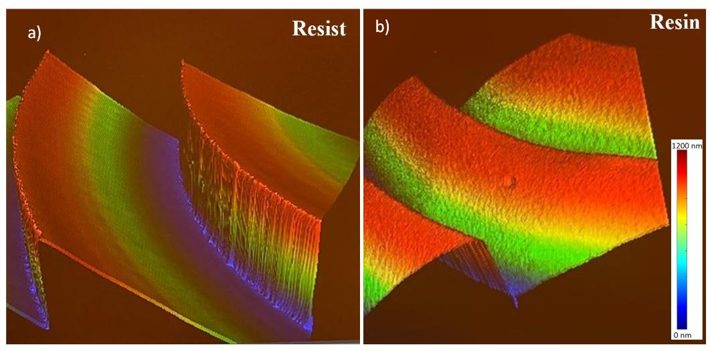

Comparative Performance Analysis of Multi-level Diffractive Lens and Lens Fabricated by Grayscale Lithography and Soft-imprinting.
Hadi AMATA, Qiang Fu, Wolfgang Heidrich
Optica Imaging Congress (Imaging Systems and Applications 2024).

Profile measurement of the fabricated 255 levels grayscale lens ( f = 100mm) on Zygo
profilometer (NewView 7300). (a) The grayscale Fresnel lens on AZ4562 photoresist. (b) the lens
transferred to UV resin by UV imprint
Abstract
Grayscale Diffractive Optical Elements (DOEs) offer superior versatility and precision in shaping light fields compared to multi-level D OEs. Its continuous grayscale modulation enables finer control, leading to enhanced performance in various optical applications..
Paper
Paper [Hadi2024OpFab.pdf (1.2MB)]